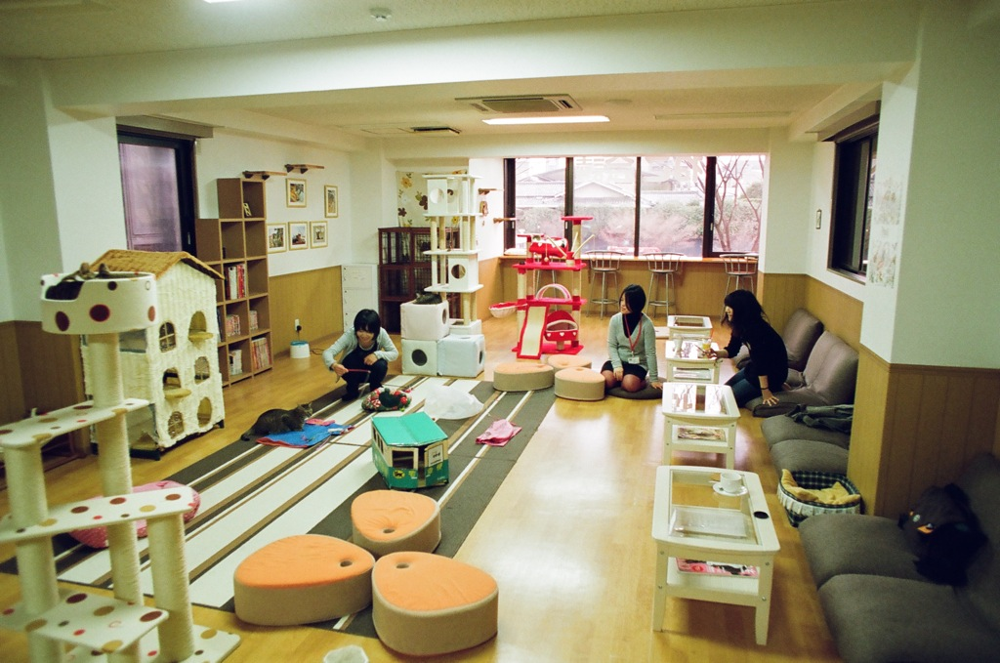

Cafeteria
En nuestro Cat Lounge te podrás relajar en compañía de nuestros gatos, con sus ronroneos, escuchar música relax, desenchufarte del estrés cotidiano, leer un libro, y además cuentas con buena conexión Wi-Fi gratis, y si te enamoras de alguno de ellos, podrás adoptarlo bajo estrictas condiciones. Si quieres venir a conocer a nuestros gatos rescatados y apoyar nuestro proyecto te contamos como hacerlo. Si quieres venir a nuestra Cafetería, probar nuestra atractiva propuesta, puedes hacer tu reserva por whatsapp. En CAFETUNO podrás aprender muchas cosas sobre gatos y bienestar animal. ¡Síguenos en las redes sociales para estar al día de nuestras actividades!